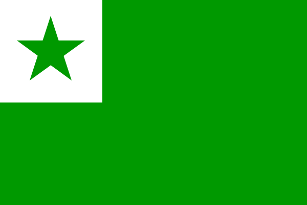

То, что я придумал от нечего делать
Мои конланги:
to be published...
Мои конорфографии:
to be published...
Другие мои творения:
Левкопинакомахия
Шляпа NSM
Визуализация регионализмов
more to be published...
Мои переводы песен:
Прыгну со скалы
Птица счастья завтрашнего дня
Синий иней
А за окном то дождь, то снег...
Луч солнца золотого
Ничего на свете лучше нету...
Белеет мой парус...
До чего дошёл прогресс
Конь
Я русский
Кнопочки

Песня остаётся с человеком
В море ветер, в море буря...
То, что я придумал для учёбы
11 класс
Новая классификация интерфиксов русского языка
RUSSIA SENTENCES OF THE RUSSIAN LANGUAGE: ЭКСПЕРИМЕНТАЛЬНОЕ ИССЛЕДОВАНИЕ РУССКИХ ПРЕДЛОЖЕНИЙ ЭШЕРА
(ИВР)
1 курс
Употребление вариантов предлогов, оканчивающихся на гласный, в восточнославянских языках: сравнительный анализ
(проект по линг. данным, оценка 9 из 9)
Вариативность словесного выражения десятичных дробей
[см. на
Vastry
] (проект 1 по социолинг., оценка 10 из 10)
Отношение людей к картавости (увулярному ротацизму) в речи мужчин и женщин
(проект 2 по социолинг., оценка 10 из 10)
СЕМАНТИКА И СОЧЕТАЕМОСТЬ РУССКИХ ПРЕДЛОГОВ XVIII-XXI ВВ.:
В КРУГУ, СРЕДИ
(курсовая, оценка 10 из 10)